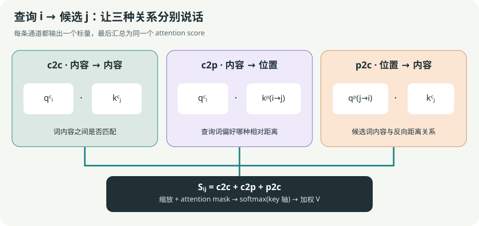

1. “哪个词”与“它相距多远”是两种信号
标准 Transformer 的 self-attention 让一个查询 token 与其他 key token 计算相关性。若在输入端把词 embedding 和位置 embedding 直接相加，后续投影获得一个混合的向量。模型当然可以从中学习相对位置信息，但词的语义内容与位置关系没有被显式解耦。对于句子 the dog chased the cat，chased 既需要判断哪个词是动作相关的参与者，也需要利用“主体通常位于前方”等结构性距离线索。
DeBERTa 的思路是把 token 的内容表示与相对位置表示分开，让注意力分数明确包含内容对内容、内容对位置、位置对内容三个通道。这里的位置表示是 token i 与 token j 的相对距离，而非简单让每个 token 的输入加一个绝对序号。

2. 三项 score 的因果分工
假设第 i 个 token 发出查询、第 j 个 token 是候选 key。c2c（content-to-content）回答：“这个查询词的内容与那个候选词的内容匹配吗？”c2p（content-to-position）回答：“这个查询词的内容是否偏好候选出现在某种相对方向/距离？”p2c（position-to-content）回答：“在从候选词看回查询词的相对位置信号下，这个候选词的内容是否匹配？”
记内容投影为 qᶜᵢ,kᶜⱼ，位置投影为 qᵖ_δ,kᵖ_δ，距离映射 δ(i,j) 表示从 i 到 j 的相对位置 bucket。无缩放的概念性打分如下：
式中 · 表示内积，c 指 content，p 指 position；这是一种便于辨识三项作用的抽象记法，真实代码还包含投影矩阵、相对位置 index gather、缩放因子及可能的额外配置。默认原始机制强调这三项；有些代码支持 p2p（position-to-position）可选项，不能因为接口里有 p2p 就误称所有 DeBERTa 模型都默认使用四项。
3. 为什么 p2c 不应直接抄 c2p 的方向
如果第 i 个位置关注第 j 个位置，c2p 的 key 使用“j 相对 i”的距离信息，而 p2c 需要以相反方向的距离视角形成 query。两者常在代码里通过不同的 gather/index 转换实现。把 δ(i,j) 与 δ(j,i) 无差别混用，即使 tensor shape 完全正确，模型依然会把“左边两个”和“右边两个”的结构偏好混成一类。
相对位置表通常只需要表示有限窗口或经过分桶的距离。举例说，从 i=4 看向 j=2，可约定 δ(i,j)=j−i=−2；从 j 看向 i 则为 +2。不同实现可以采用相反的符号约定，关键不是哪种符号“唯一正确”，而是 build_relative_position、position key/query gather 以及可视化标签必须一致。
不应把“relative attention”误等同于免费线性复杂度。即便相对距离 embedding 有共享参数，普通全局 attention 仍需按所有合法 (i,j) 计算分数并 softmax，时间与 score 矩阵尺度仍随序列长度呈二次关系。
4. 三项相加之后，softmax 仍对 key 维归一化
考虑 batch B、长度 T、头数 h、单头维度 dₕ。内容 Q,K,V 分头后形状通常为 [B,h,T,dₕ]，三项共同产生 [B,h,T,T] logits。第 3 维对应 query 索引 i，第 4 维对应 key 索引 j；对 j 维做 masked softmax，再得到 [B,h,T,dₕ] 的 weighted values，最后拼回 [B,T,H]。
上式为说明归一化轴而省略了 padding mask 与多项缩放。Microsoft 官方 DeBERTa 源代码以 scale_factor 统计启用的额外 position score 项；例如仅 c2p+p2c 时有三项整体缩放，典型因子与 √(3dₕ) 相关。实际实现还要特别注意屏蔽位置、数值稳定 softmax 与 half precision 精度。
所谓解耦不表示位置 embedding 每层都要按序列长度创建不同的完整矩阵；实现往往共享一个小的相对距离表，并对 query/key 位置对 gather 相应投影。
5. Enhanced Mask Decoder：什么时候使用绝对位置
DeBERTa 原论文的第二个主要机制是 enhanced mask decoder。Encoder 注意力主要以内容与相对位置建模，而在预训练 MLM 预测阶段，解码器额外利用绝对位置信息来帮助恢复被 mask 的 token。这是在预测头/解码阶段引入位置线索，不是把上文每一项 c2p/p2c 都改写成绝对位置。
为什么需要这种路径？例如一个句子中的 “the” 可能出现很多次，仅有相对结构不一定足以区分哪一个空格对应当前输出槽位；绝对位置可帮助预训练预测目标定位。是否在下游输出任务中保留相同解码头，应看 checkpoint 与 forward 定义，不应假设 EMD 是所有推理场景必选的额外 Transformer Encoder。
6. DeBERTa 家族并不是一个固定配置
原始 DeBERTa、后续 DeBERTa-v2/v3 与社区 checkpoint 在 tokenizer、位置分桶、相对 attention 配置和训练目标上可能不同。特别是 DeBERTa-v3 引入新的训练目标与权重共享设计，不能直接把它的性能改善全归因于 2020 年原始 DeBERTa 的三项注意力或 EMD。
官方实现的 pos_att_type 可按配置选择 c2p、p2c、可选的 p2p；有些配置只启用一项。阅读开源模型代码时，先核查 checkpoint config，而不是从论文概念推断它实际开了哪几项。
7. 审计 attention 时，最值钱的是具体断言
- 方向测试：选一个非对称句子，让 i→j 与 j→i 显示不同的 bucket index；确认 p2c 的反向索引使用正确。
- mask 测试：所有 padding key 的 softmax 权重必须为 0；同一行合法 key 权重求和应近似 1。
- 形状测试：每项 score 均能广播或 gather 至
[B,h,T,T]，没有把 T 维与 h 维混在一起。 - 消融测试：关掉 c2p 或 p2c，记录参数/运行成本和任务指标；不能只看单个样例对错判断论文结论。
- 版本测试：核对官方 DeBERTa-v1/v2/v3 的 tokenizer 与模型配置；不把不同版本的训练策略混写。
DeBERTa 原论文报告在当时的下游评估上相对 BERT/RoBERTa 有提升；但是同时变化的训练数据、模型规模、微调方式需要逐项核对。特别不要把“在某套 SuperGLUE 任务和人类基线上的比较”改写成“所有自然语言任务已超过人类”。
8. 交互：同一个词对，三项 score 各代表什么
解耦分数的玩具拆分
设查询是 chased，候选是 dog，候选位于查询左侧。这些数值仅演示加法与方向，不是学得的 DeBERTa 权重。
教学 scores：c2c = 0.8，c2p = 0.4，p2c = −0.1。 原始总分 S = 0.8 + 0.4 − 0.1 = 1.1。 真实实现还需缩放、mask 与沿候选 key 维 softmax。
关键结论
- DeBERTa 的基础机制用 c2c、c2p、p2c 三类 score 表达内容与相对位置的不同关系。
- p2c 依赖与 c2p 相反方向的相对距离视角；符号约定可选但索引必须自洽。
- Enhanced Mask Decoder 在 MLM 预测阶段引入绝对位置线索；与 Encoder 相对位置打分是不同层面的机制。
- 模型家族各版本、配置项与下游训练不等于一个固定的 DeBERTa 实现，实验应记录具体 checkpoint。
原始论文、官方源码与变体边界
- He et al., DeBERTa: Decoding-enhanced BERT with Disentangled Attention，§3.1–3.2、Figure 2、§4 消融。
- Microsoft, disentangled_attention.py（
c2p/p2c/ 可选p2p计算）。 - DeBERTa 官方仓库（checkpoint、训练设置与版本说明）。
- He et al., DeBERTaV3（后续版本与训练目标差异）。